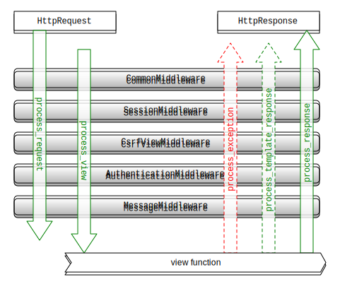

Static files, Middleware, More about sessions, etc.
Lassi Haaranen
Django documentation on migrations is quite exhaustive. Tutorial on Real Python covers the common use case with a clear example.
As an example, let's start and app called bird:
python3 manage.py startapp birdAnd edit bird/models.py to contain the following:
from django.db import models
class Bird(models.Model):
name = models.CharField(max_length=200, unique=True)Now running manage.py makemigrations bird will create a file bird/migrations/0001_initial.py that contains the information how the database should be adjusted to reflect the changes on the model.
You can see the actual SQL commands by running manage.py sqlmigrate bird 0001:
BEGIN;
CREATE TABLE "bird_bird" (
"id" integer NOT NULL PRIMARY KEY AUTOINCREMENT,
"name" varchar(200) NOT NULL UNIQUE);
COMMIT;Now running manage.py migrate bird will modify your database with the SQL query on the previous slide.
If we modify the model in the future, e.g. by adding a field to bird:
species = models.CharField(max_length=200, unique=True, default="")And the run makemigrations again, a new file 0002_bird_species.py will be created. Again we can see how the database is modified by running sqlmigrate bird 0002.
BEGIN;
CREATE TABLE "bird_bird__new" ("id" integer NOT NULL PRIMARY KEY AUTOINCREMENT, "name" varchar(200) NOT NULL UNIQUE, "species" varchar(200) NOT NULL UNIQUE);
INSERT INTO "bird_bird__new" ("id", "species", "name") SELECT "id", '', "name" FROM "bird_bird";
DROP TABLE "bird_bird";
ALTER TABLE "bird_bird__new" RENAME TO "bird_bird";
COMMIT;In Django files that do not change (like images, CSS, JavasScript files etc.) are referred to as static files.
To enable static files in your Django project you must have django.contrib.staticfiles in your INSTALLED_APPS (in settings.py). Additionally you need to define in your settings where the static files will be located, e.g.
STATIC_URL = '/static/'Now you can store your apps static files in a folder, e.g. blog/static/blog/header.png.
Django docs Static Files
You can use the static files in a template by their path. E.g. presuming you have the image blog/static/blog/header.png you can display it in a template:
< img src="/static/blog/header.png" alt="My Blog" >A better way of accessing static files in a template would be to use the static template tag:
{% load staticfiles %}
<img src="{% static 'blog/header.png' %}" alt="My Blog"/>You also need to actually serve the static files. In development this is handled automatically when you use the manage.py runserver command and your DEGUB is set to True in the settings.
"This method is grossly inefficient and probably insecure, so it is unsuitable for production." Static Files
In production you need to use something else. The course project will be deployed to a service called Heroku and they have their documentation on how to handle static files there.
The staticfiles app comes with three commands that are used to manage the static assets. manage.py collectstatic will go through all the apps with and collect all the static assets into a single folder, defined in the settings as STATIC_ROOT. This is an absolute path to a directory where the files will be located.
Linking to other pages/views in templates works just as you would expect it to work:
<p>Hello, {{user}}. <a href="/logout">Logout</a></p>Django comes built-in with url template tag, that can be used to resolve URLs to other views in the app:
Link with positional arguments
{% url 'path.to.some_view' v1 v2 %}
Link with keyword arguments
{% url 'path.to.some_view' arg1=v1 arg2=v2 %}Note, do not mix keyword arguments and positional arguments. Examples from django docs url template tag.
If you want to display the URL:
{% url 'path.to.view' arg arg2 as the_url %}
<a href="{{ the_url }}">I'm linking to {{ the_url }}</a>If you have named your URL pattern, you can use that as well when linking:
# in urls.py
from django.conf.urls import patterns, url
from mysite.views import archive
urlpatterns = patterns('',
url(r'^archive/(\d{4})/$', archive, name="full-archive"),
url(r'^archive-summary/(\d{4})/$',
archive, {'summary': True}, name="arch-summary"),
){% url 'arch-summary' 1945 %}
{% url 'full-archive' 2007 %}Example from Django docs naming URL patterns.
If you have an email server set up, sending email from Django is fairly straightforward:
from django.core.mail import send_mail
send_mail(
'Subject of the email',
'Body of the message',
'from@example.com',
['to@example.com'])Django has several email backends that you can use. Backends are defined in settings, e.g.:
# Send emails with SMTP
EMAIL_BACKEND = 'django.core.mail.backends.smtp.EmailBackend'
# Instead of sending, prints the emails to standard output
# Very useful for development
EMAIL_BACKEND = 'django.core.mail.backends.console.EmailBackend'Django docs on sending email.
# in settings.py
EMAIL_BACKEND = 'django.core.mail.backends.console.EmailBackend'>>> from django.core.mail import send_mail
>>> send_mail('Hello', 'Just trying out', 'admin@myblog.com', ['some_user@myblog.com'])
MIME-Version: 1.0
Content-Type: text/plain; charset="utf-8"
Content-Transfer-Encoding: 7bit
Subject: Hello
From: admin@myblog.com
To: some_user@myblog.com
Date: Sat, 29 Nov 2014 19:23:41 -0000
Message-ID: <20141129192341.1877.62618@callisto.local>
Just trying out
-------------------------------------------------------------------------------
1"Middleware is a framework of hooks into Django’s request/response processing. It’s a light, low-level “plugin” system for globally altering Django’s input or output." Django docs

Image from Django docs.
"Django provides full support for anonymous sessions. The session framework lets you store and retrieve arbitrary data on a per-site-visitor basis. It stores data on the server side and abstracts the sending and receiving of cookies. Cookies contain a session ID – not the data itself (unless you’re using the cookie based backend)." Django Docs
When you have sessions middleware enabled, the requests that you get in views will have a session attribute which you can read and edit.
request.sessionYou can get items as in a normal dictionary and set them:
request.session['fav_color'] = 'blue'
# red is default if fav_color is not found
fav_color = request.session.get('fav_color', 'red') Some helpful methods for sessions:
.flush() removes all session data and creates a new session key valueset_expiry(value) when this session expires, value can be integer (in expiry in seconds), datetime/timedelta. If set to 0, session expires when browser is closed.keys() retrieves all keys in the sessionitems() retrieves all items (key-value tuples) in the sessionExamples from Django docs.
Authentication Middleware handles the combining of a request and a user. It is the piece of code that attaches user to incoming requests that can then be accessed in views. If the user is authenticated, the request.user will be an instance of User class, or otherwise and instance of AnonymousUser.
if request.user.is_authenticated():
# Do something for authenticated users.
else:
# Do something for anonymous users.As a reminder authenticating requests on Django docs.
"Quite commonly in web applications, you need to display a one-time notification message (also known as “flash message”) to the user after processing a form or some other types of user input. For this, Django provides full support for cookie- and session-based messaging, for both anonymous and authenticated users." Django Docs
The idea is, that you display (usually) one-off message to the user. Typically informing that the state of the server has changed. E.g. "your order was received".
To enable messages in your project:
django.contrib.messages to INSTALLED_APPSdjango.contrib.sessions.middleware.SessionMiddleware django.contrib.messages.middleware.MessageMiddlewaredjango.contrib.messages.context_processors.messages to TEMPLATE_CONTEXT_PROCESSORSTo use messages, add them in a view:
from django.contrib import messages
messages.add_message(request, messages.INFO, 'Hello world.')
# There are also shortcuts
messages.success(request, 'Profile details updated.')
messages.warning(request, 'Your account expires in three days.')
And display them in a template:
{% if messages %}
<ul class="messages">
{% for message in messages %}
<li{% if message.tags %} class="{{ message.tags }}"{% endif %}>
{{ message }}
</li>
{% endfor %}
</ul>
{% endif %}More details in Django docs.
"A web cache is a mechanism for the temporary storage (caching) of web documents, such as HTML pages and images, to reduce bandwidth usage, server load, and perceived lag. A web cache stores copies of documents passing through it; subsequent requests may be satisfied from the cache if certain conditions are met." Wikipedia
In HTTP three mechanics are defined to control caching: freshness, validation, and invalidation.
Expires and Cache-control headers.Last-Modified and Etag headers. Used with conditional requests.POST, PUT, DELETE) can invalidate resource's cache.Django has variety of built-in caching options to use as a backend. Caching is a large topic, this is only a very brief introduction on how to enable caching in Django.
Caching backends are found in django.core.cache.backends. It contains:
.db.DatabaseCache.dummy.DummyCache (use during development if cache is used in production) .filebased.FileBasedCache.locmem.LocMemCache (default, if not other backend is specified.memcached.MemcachedCache.memcached.PyLibMCCacheTo enable caching in Django add one of the backends to CACHES in settings.
CACHES = {
'default': { # name of the cache, you can have multiple
# Backend used for this cache
'BACKEND': 'django.core.cache.backends.filebased.FileBasedCache',
# Where the cache is stored, in this case it's a file path
# with e.g. database cache it would be name of a database table
'LOCATION': '/var/tmp/django_cache',
}
}For detailed instructions and information of the various settings, refer to the Django documentation.